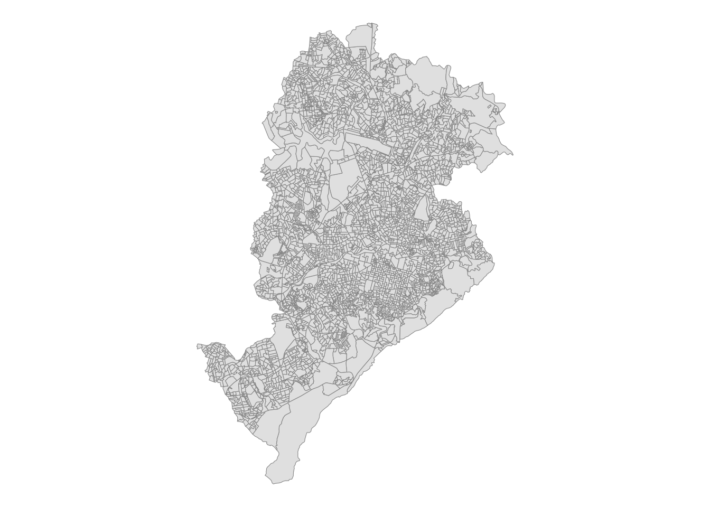

Talvez os conjuntos de dados mais comumente usados dos censos brasileiros sejam os microdados de pessoas e domicílios. No entanto, o IBGE também disponibiliza dados muito ricos sobre as características populacionais e ambientais agregados no nível de setores censitários. Neste capítulo, mostramos como usar o pacote {censobr} para acessar facilmente esses dados usando a função read_tracts().
Estrutura dos dados
No seu formato original, os dados agregados no nível de setores censitários estão divididos em diferentes tipos de variáveis (e.g. variáveis de características de pessoas, de domicílios, etc). Em muitos casos, esses conjuntos de variáveis estão espalhadas por vários arquivos (em alguns casos com centenas variáveis). Para facilitar o entendimento desses dados, o {censobr} reúne todos os arquivos / variáveis em 8 tabelas:
"Basico"
"Entorno"
"Domicilio"
"Pessoa"
"Responsavel"
"PessoaRenda"
"DomicilioRenda"
"ResponsavelRenda"
Todas estas tabelas estão organizadas seguindo a mesma lógica. Nos casos em que as variáveis de uma tabela provêm de arquivos diferentes, o nome da variável recebe um prefixo indicando a sua tabela de origem. Isso é feito para facilitar a consulta do significado de cada coluna no arquivo de dicionário variáveis (no próximo capítulo a gente vai ver como baixar os dicionários variáveis dos censos).
Para ilustrar isso, vejamos a tabela com variáveis de "Domicilio". Essa tabela provêm de dois arquivos separados: Domicilio01 e Domicilio02. Assim, os nomes das colunas nessa tabela são organizados da seguinte maneira:
library(censobr)# baixa dados agregados de setores: variáveis de domiciliosdom <-read_tracts(year =2010, dataset ='Domicilio',as_data_frame =FALSE,showProgress =FALSE)names(dom)[c(1:12,301:306)]
Para verificar o significado de cada variável, você pode executar o comando data_dictionary(), que abrirá no navegador um arquivo .html ou .pdf com o dicionário de variáveis de cada conjunto de dados (ver mais info no capítulo 6 sobre Documentação).
data_dictionary(year =2010,dataset ='tracts')
Exemplos reproduzíveis
Essa organização dos dados agregados por setores censitários parece confusa a primeira vista. E é mesmo. Mas essa organização fica mais clara com alguns exemplos práticos.
Nesta seção, nós vamos utilizar alguns exemplos para ilustrar como trabalhar com dados no nível de setor censitário. Primeiro, precisamos carregar as bibliotecas que usaremos neste tutorial.
Nos dois exemplos abaixo, usaremos a cidade de Belo Horizonte para fins de demonstração. No primeiro exemplo, nós vamos mapear a distribuição espacial da renda com dados de 2010. No segundo exemplo, nós vamos mapear a distribuição espacial da densidade populacional de BH com os dados preliminares do censo de 2022.
Exemplo 1: Distribuição espacial da renda em 2010
Neste primeiro exemplo, criaremos um mapa da distribuição espacial da renda média per capita. A informação sobre o número total de residentes em cada setor censitário está disponível na tabela com conjunto de variáveis do bloco "Basico", na variável "V002". Já a informação sobre renda total do setor censiário pode ser encontradas na tabela do bloco "DomicilioRenda", na variável "V003".
Utilizando o código abaixo, podemos baixar os dados e calcular a renda per capita de todos os setores censitários no Brasil. Posteriormente nós vamos filtrar esses resultados para ficar apenas com os setores de BH.
# baixa os dadostract_basico <-read_tracts(year =2010,dataset ="Basico",showProgress =FALSE)tract_income <-read_tracts(year =2010,dataset ="DomicilioRenda",showProgress =FALSE) # selecionar conlunastract_basico <- tract_basico |>select('code_tract','V002')tract_income <- tract_income |>select('code_tract','V003')# unir as tabelasstracts_df10 <-left_join(tract_basico, tract_income)# calcular a renda per capitatracts_df10 <- tracts_df10 |>mutate(income_pc = V003 / V002) |>collect()head(tracts_df10)
O próximo passo é baixar as geometrias dos setores censitários de BH em 2010 com a função read_census_tract, do pacote {geobr}. Aqui, nós passamos o parâmetro code_tract = "MG" baixar os todos os setores do estado de Minas Gerais e depois filtramos apenas o município de Belo Horizonte.
# busca qual o código do municipio de Belo Horizontebh_info <- geobr::lookup_muni(name_muni ='Belo Horizonte')#> code_muni: 3106200# baixa municipio de BHmuni_bh <- geobr::read_municipality(code_muni ='MG', year =2010,showProgress =FALSE) |>filter(name_muni =="Belo Horizonte")# baixa todos setores de Minas Geraistracts_2010 <- geobr::read_census_tract(code_tract ="MG",year =2010,simplified =FALSE,showProgress =FALSE)# filtra setores de BHtracts_2010 <-filter(tracts_2010, name_muni =='Belo Horizonte')# mapa de setores censitariosggplot() +geom_sf(data=tracts_2010, fill ='gray90', color='gray60') +theme_void()
1
O comportamento padrão do {geobr} é baixar uma versão da malha espacial com geometrias ligeiramente simplificadas (simplified = TRUE) para agilizar o processamento e visualização de dados. Aqui, nós baixamos os dados com geometrias originais devido à escala espacial da visualização dos resultados.

Por fim, a gente pode fazer um merge dos dados espaciais e de renda dos setores censitários usando como variável chave o código do setor censitário (code_tract) e criar o mapa da distribuição espacial da renda per capita do município.
Examplo 2: Distribuição espacial da população em 2022
Neste segundo exemplo, nós vamos utilizar os resultados "Preliminares" dos agregados dos setores censitários do censo de 2022, que foram divulgados pelo IBGE em março de 2024. Em particular, vamos utilizar a variável V0001 que informa a população total dos setores. Além disso, como houve uma mudança na malha espacial de setores censitários entre 2010 e 2022, nós precisamos baixar a malha do ano correspondente.
# download dados preliminares dos setores de 2022tracts_df22 <-read_tracts(year =2022,dataset ="Preliminares",showProgress =FALSE) |>filter(name_muni =='Belo Horizonte') |>collect()# baixa todos setores de Minas Geraistracts_2022 <- geobr::read_census_tract(code_tract ="MG",year =2022,simplified =FALSE,showProgress =FALSE)# filtra setores de BHtracts_2022 <-filter(tracts_2022, name_muni =='Belo Horizonte')
Agora a gente pode fazer um merge da tabela de população com os dados espaciais, calcular a área dos setores em Km2 e a densidade demográfica de cada setor, e criar o mapa.
# merge tablestracts_df22$code_tract <-as.numeric(tracts_df22$code_tract)bh_tracts22 <-left_join(tracts_2022, tracts_df22, by ='code_tract')# calcula a área dos setoresbh_tracts22 <- bh_tracts22 |>mutate(tract_aream2 = sf::st_area(tracts_2022),tract_areakm2 = units::set_units(tract_aream2, km2))# calcula densidade demograficabh_tracts22 <- bh_tracts22 |>mutate(pop_km2 =as.numeric(V0001/ tract_areakm2))# mapggplot() +geom_sf(data = bh_tracts22, color=NA,aes(fill =ifelse(pop_km2<20000,pop_km2,20000))) +geom_sf(data = muni_bh, color='gray10', fill=NA) +labs(title ='Densidade populacional dos setores censitários',subtitle='Belo Horizonte, 2022') +scale_fill_distiller(palette ="Reds", direction =1, name='População por'~Km^2,breaks =c(0, 5e3, 10e3, 15e3, 2e4) ,labels =c('0', '5.000', '10.000', '15.000', '> 20.000')) +theme_void()